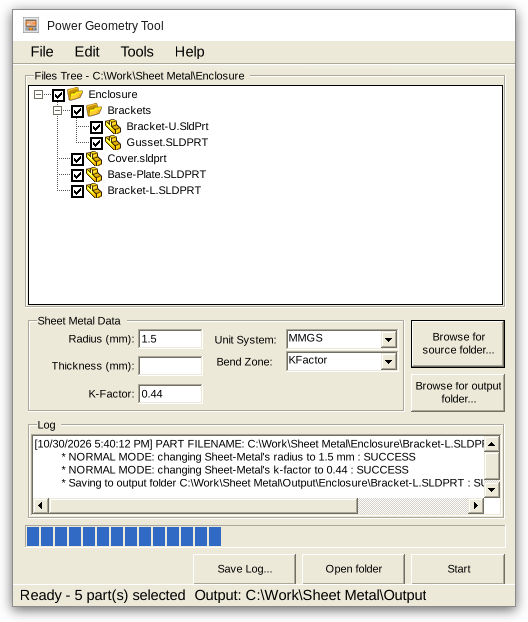

Power-SM Add-in for SolidWorks

Version History:
- 10/30/2026: 1.5 release
- 06/15/2016: 1.4 release
- 05/10/2016: 1.3 release
- 04/14/2016: 1.2 release
- 01/20/2016: 1.1 release
- 01/03/2016: 1.0 release
Downloads
Installers for every version are on the Releases page. Requires 64-bit SolidWorks and .NET Framework 4.5 or later.
About:
Power-SM, short for Power Sheet Metal, is a free C# add-in for SolidWorks.
Modifying hundreds of sheet metal parts by hand is tedious, especially in mass manufacturing. Power-SM does it in one run so mechanical design engineers can focus on design.
- Power Geometry Tool: change the radius, thickness and K-factor, bend allowance or bend deduction of every part in a folder.
Notes to developers
Open PowerSM/PowerSM.sln in Visual Studio and restore the NuGet packages. The SolidWorks interops come from the BlueByte.SOLIDWORKS.Interops package. See the README for build steps.